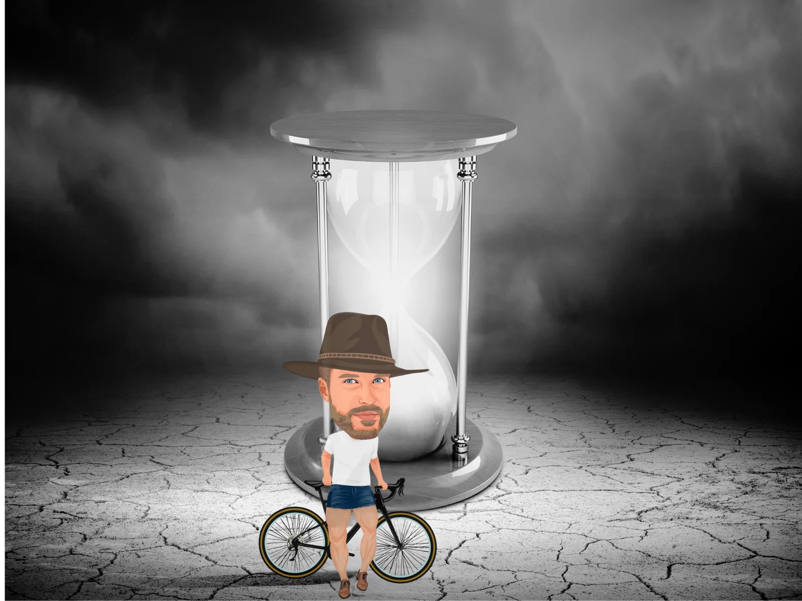
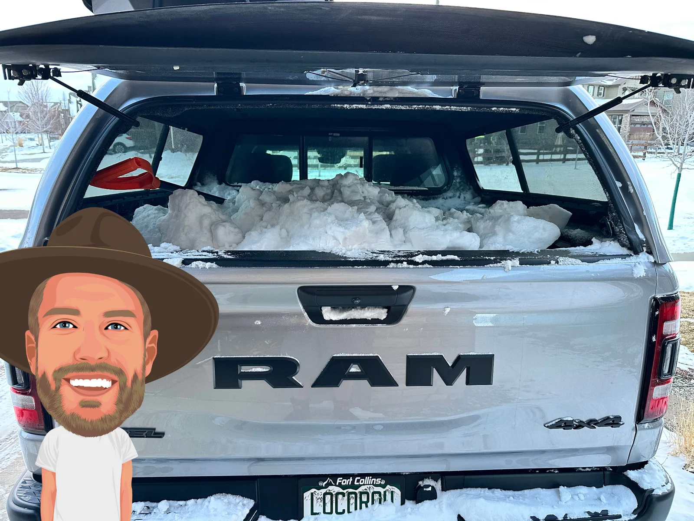
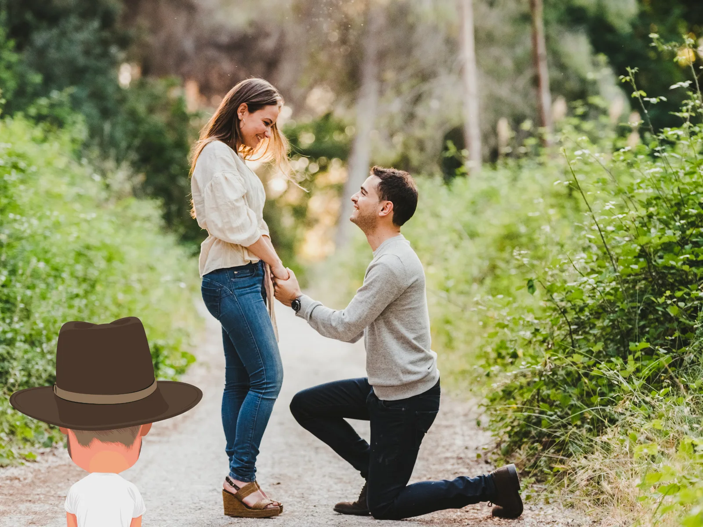

Math sucks because it ruins the delusions most of us rely upon to feel good about ourselves.
For example, yesterday, I was once again tempted to skip my training to make a run with the truck in search of virgin snowbanks I hastily shoveled to replenish my backyard sledding hill because Colorado's winters are babyish, and temperatures rarely remain below freezing for long periods. I can’t stand seeing my children reduced to playing in a snowless backyard like peasants.
But that would have been a fourth day where I prioritized a sledding hill over training, and I can only do so much of those before I start to get nervous that my athletes could beat me, so I let the damn thing melt and knocked out a workout that generated enough lung butter to become a competitor to Kerigold, the Irish Dairy company that proves there is a God.
I'm lying—I didn't need to skip training because earlier that morning after yoga, I spotted a large mound of parking lot snow tucked discretely into the fringes of an office complex. I backed up to it and loaded it into my truck. I'm not kidding—I have receipts.


Anyway, even though I didn't need to make any tradeoffs, the hypothetical tradeoff I was about to make got me thinking about why I'm not training with urgency right now, and I was able to roughly chimp that feeling down to 'I have so much time. I could not race again until I'm 40, get this mid-life crisis shoveling thing out of my system, and still spend the next decade racing lots."
But then I mathed it, and realized, much like you shouldn't have bratwursts in the house when you're dieting, that I'd better let that sledding hill melt because I don't have as many chances as I thought I did and it's turning into a ruinous distraction.
How few? Let's talk about the big one—the 'A' race - they race, train, build, and taper once a year. We're not talking about Unbound 200 here - that's JV shit. We're talking about the really important races, like Red Granite Grinder.
Slow, Mid, 38s is a reader-supported publication. To receive new posts and support my work, consider becoming a free or paid subscriber
For the average cyclist's career, each A race represents 10-20% of all the A races they'll ever do. That means every 'A' race is not just another day on the calendar—it's a rare, high-stakes opportunity. Miss one, and you've just forfeited 10-20% of your potential best moments before the clock runs out.
That's the conclusion of my thought experiment, but in figuring that out, I realized the math that got me there is a colder shower for EVERYTHING in life than I assumed it would be and injected an urgency into everything I do since I figured this out that probably looks like panic to a stranger.
For the average cyclist's career, each A race represents 10-20% of all the A races they'll ever do. That means every 'A' race is not just another day on the calendar—it's a rare, high-stakes opportunity.
Let's math, baby:
Life
Life is short. On average, most of us get about 80 years, or just under 30,000 days, between screaming into this world and limping out of it.
But notice I said average - that number is a statistical midpoint. Sure, some people make it to 90, but most don't even get close.
A non-trivial percentage of people drop dead in their 40s, 50s, or 60s. Accidents, illness, or just bad luck cut lives short all the time. Statistically, your risk of dying increases sharply with age, but the probabilities start to creep up much earlier than people expect:
By age 40, your chance of dying within the next year is about 0.38% or roughly 1 in 260. This might seem small, but it's not nothing.
By age 50, that risk increases to around 0.67%, or 1 in 150.
At age 60, your odds jump to about 1.43%, or 1 in 70. That's a noticeable leap.
By 70, your chance of dying within the next year is approximately 2.7%, or 1 in 37
Also, this is fun: with the whole 'Don't Die' Bryan Johnson thing erupting into the public consciousness, I looked up the chances of living to be 100. It's 1 in 67 people. An arguably genius IQ? 1 in 61. So you have a better chance of being a genius than living to 100. That should put that feat in perspective.
If you break it down like that, maybe that still sounds like a lot of time, but here's the kicker: you don't even 'live' most of it. The majority of life slips by unconscious, unnoticed, or forgotten.
Shit is about to get depressing in here.
You have a better chance of being a genius than living to 100.
Huh?
A third of your life is spent unconscious sleeping.
Even if you're an 'I'll sleep when I'm dead' type, you'll sleep about 8 hours a night on average. So, assuming you reach 80 years old, you've been in bed for around 26 years. Just lying there, dreaming (if you're lucky), or dead to the world.
That's pretty sobering, but not as sobering as realizing that you forget most of the 2/3 of your life you are awake for because our memory is shit. We only retain a fraction of our life's experiences.
How much? It's grim.
Studies estimate that we forget 90% of waking memories, which fade quickly, with only 10% forming lasting memories. So, if you lived a long, perfect life envied by millions, you will only remember, at best, 8 years out of 80.
Falling Apart
So far, we've established that getting old is less likely than you think; even if you do, you'll be asleep for a good chunk of it, and you'll mostly forget what you are awake for. Let's add more details that make this worse.
Not all ages are created equal. You're not going to be splitting the atom or running a four-minute mile when you're 79 years old, or five years old, or six, or ten - humans' physical and mental peaks are well documented and finite.
Most people peak physically somewhere between 25 and 35. Let's be generous and say you've got a 10-year window when you can perform at your best athletically.
If you make it to 80, that equates to 13% of your life spent at the height of your powers, but you'll only be awake for roughly six years of that and remember less than seven months.
I won't blame you if all this makes you feel like you need a stiff drink.
If you make it to 80, that equates to 13% of your life spent at the height of your powers, but you'll only be awake for roughly six years of that and remember less than seven months.


Life Tho
While most people theoretically might enjoy a 10-year physical peak, the 'cycling career' for most people is nowhere near as long as they think. In my observation (and statistically), you've got 5 years, tops, where you're going to really get after it, train, and race for real until you:
Rage quit.
"Take a step back"
Race and train way less.
If that cyclist races 10-20 times per year over five years, they'll compete 50-100 times, which means that every race they do is 1-2% of all the races they'll ever do.
As insignificant as that number might seem, remember not all races are created equal. The athlete can physically only taper for one or two (max) big 'A' races per year, the races where they're in the best shape and aiming to perform at their highest potential.
So, over five years, the average cyclist will have, at best, 10 A races and, at worst, 5, with most falling somewhere in between.
That's not many, but we haven't even factored in the fact that those are only opportunities, not guarantees that the athlete will 'nail it.' The harsh reality is that for every athlete who perfectly executes their A race, just as many fumble it. If we're generous, let's say that athletes, on average, only succeed at about their rate of awakening in life—70%.
Ouch - that means if an athlete competes in five A races in their career, they'll embarrass themselves in two out of five of those races.
Put another way, the average cyclist has three good A races in total and probably barely remember one.
So what?
If you're training and racing, you better be full-assing it because, your time is limited even though it might not seem like it. Even if you compete more than average, each race represents a meaningful step toward leaving the sport. If you're going to do it, fine, do it.
And if you're in that part of your life and you've murdered an A race, for goddsakes enjoy your day in the sun. Don't call me and say, 'No one showed up.' Don't complain about how the podium wasn't high enough. Don't bitch about the prize more or how you didn't deserve it because of X, Y, Z - enjoy yourself for once.
You're in one of the 'one of the good parts of life.' You should glory in your accomplishment because, even though I would never say it to you, it probably won't happen to you again.
p.s.
While math can be illuminating, it's never come close to reaching me like the words of some maladjusted mega chad from the 19th century with too many mistresses and a drinking problem, so I'll leave you with the haunting words of Jean-Paul Sartre:
‘I have led a toothless life,’ he thought. ‘ A toothless life. I have never bitten into anything. I was waiting. I was reserving myself for later on-and I have just noticed that my teeth have gone.
Don't wait.
Thanks for reading Slow, Mid, 38s! This post is public, so feel free to share it.